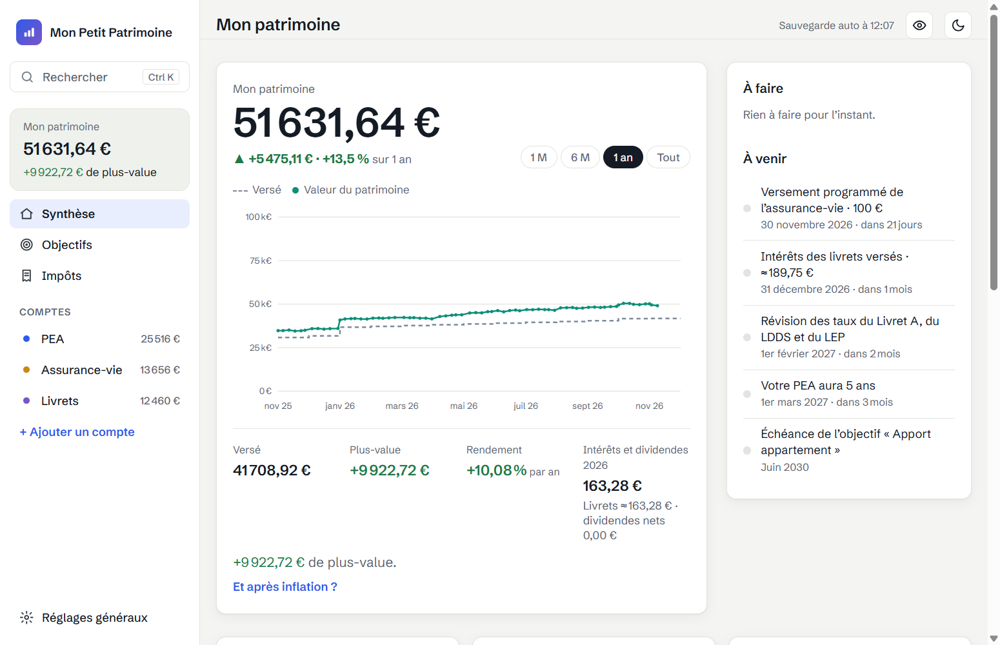
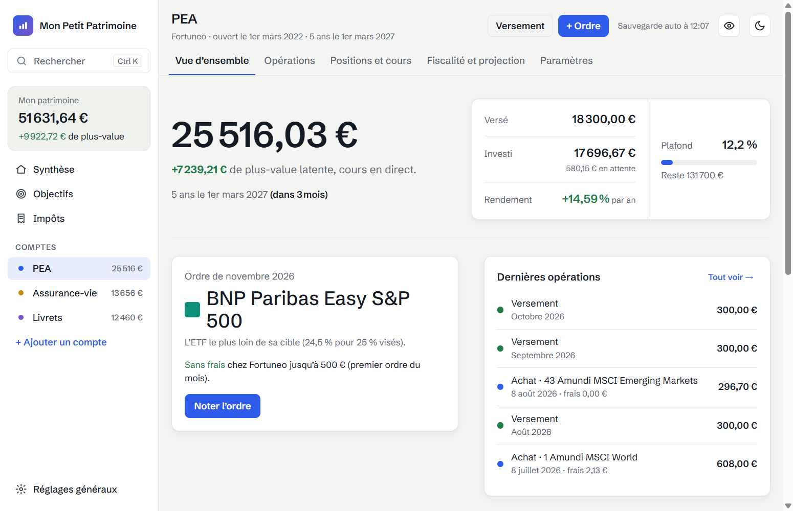
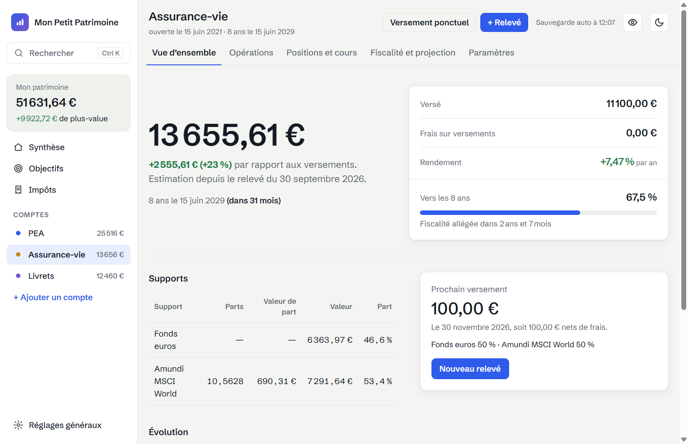
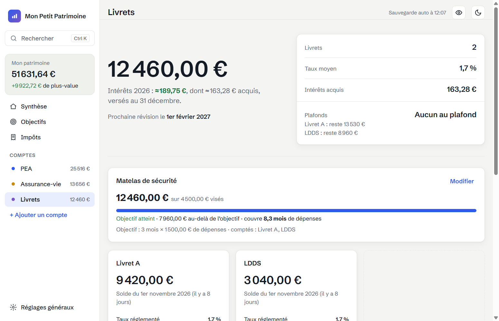
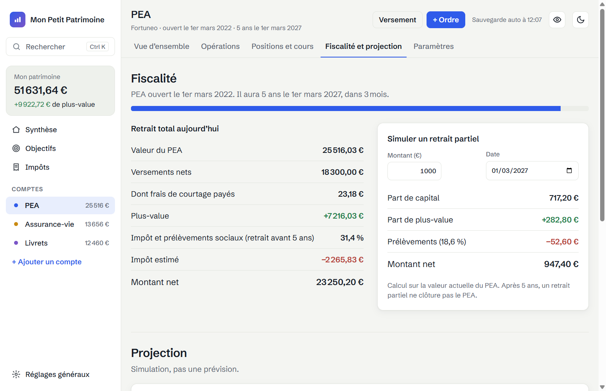
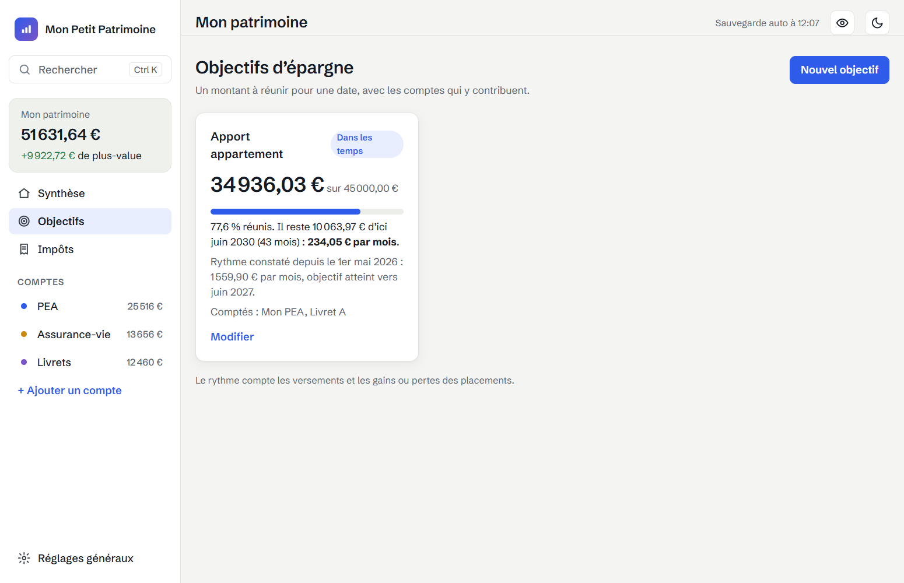

Le guide gratuit
Tout mon patrimoine d’un coup d’œil
PEA, assurance-vie, livrets : comment j’ai enfin su combien j’avais vraiment
Par le créateur de Mon Petit Patrimoine
1. Le déclic : mon livret A me faisait perdre de l’argent
J’ai 26 ans. Comme beaucoup, j’ai commencé par un livret A : sûr, disponible, « ça rapporte un peu ».
Puis j’ai fait un calcul simple. Mon livret A rapporte 1,7 % par an. Si les prix augmentent de 2 % par an en moyenne, mon argent grossit moins vite que tout ce que je veux acheter avec.
Sur 10 ans, 10 000 € deviennent 11 836 € sur le relevé. Mais avec 2 % d’inflation par an, ces 11 836 € n’achètent plus que ce que 9 710 € achetaient au départ.
J’ai gagné 1 836 € sur le papier mais perdu près de 300 € de pouvoir d’achat.
Personne ne m’en avait parlé. Ni ma banque, ni mon relevé.
Ce jour-là, j’ai décidé de me construire un patrimoine, au lieu de laisser dormir mon épargne.
2. Du PEA à l’Excel qui craque
En cherchant comment faire travailler mon argent, je suis tombé sur le PEA. Je me suis formé, j’ai appris les bases, puis je me suis lancé : j’ai ouvert mon PEA chez Fortuneo et commencé à investir un peu chaque mois.
Très vite, j’ai eu des comptes partout : le PEA chez un courtier, une assurance-vie ailleurs, des livrets à la banque. Trois sites, trois mots de passe, trois façons de présenter les chiffres. Aucun ne répondait à mes deux questions : combien j’ai en tout et combien ça m’a vraiment rapporté ?
Alors j’ai tout centralisé dans un fichier Excel. Ça a marché… quelques mois. Puis il a fallu recopier chaque opération, mettre les cours à jour à la main, réparer les formules. Le rendement par an, avec des versements à des dates différentes, est devenu un casse-tête. Le fichier devenait trop compliqué. J’ai arrêté de l’ouvrir.
J’ai donc cherché une application. Celles que j’ai trouvées affichent tout, automatiquement. Mais en échange, elles demandent :
- vos identifiants bancaires, ou un accès permanent à vos comptes ;
- un compte chez elles, avec vos données stockées sur leurs serveurs ;
- souvent un abonnement, parfois de l’argent gagné en vous proposant des produits financiers.
Je ne voulais pas que mes données partent quelque part. Ce n’est pas de la méfiance envers une marque en particulier : la donnée la plus sûre est celle qu’on ne transmet pas.
Et je voulais surtout une application qui me ressemble : simple, claire, pensée pour quelqu’un qui débute et veut progresser.
Je ne l’ai pas trouvée. Alors je l’ai construite. Voilà comment est né Mon Petit Patrimoine.
3. Les 5 chiffres qui comptent vraiment
Le solde affiché par votre banque ne dit presque rien. Voici les cinq chiffres que je regarde et pourquoi.
3.1 Le rendement réel, après inflation
C’est mon déclic. Un placement qui rapporte moins que l’inflation vous appauvrit, même s’il affiche un gain.
Rendement réel ≈ rendement affiché − inflation. Livret A à 1,7 % et inflation à 2 % : environ −0,3 % par an.
Ce n’est pas une raison de vider son livret : il reste l’épargne de précaution, disponible à tout moment. Mais ce n’est pas là que l’argent travaille.
3.2 Ce que vous avez versé, pas seulement ce que vous avez
Un PEA qui affiche 11 200 € : est-ce bien ? Impossible à dire sans savoir combien vous y avez mis.
Si vous avez versé 10 000 €, votre plus-value est de 1 200 €, soit +12 %. Si vous avez versé 11 500 €, vous êtes en perte.
Le versé est le point de départ de tout le reste. Beaucoup d’investisseurs ne le connaissent pas.
3.3 Le rendement par an, qui tient compte des dates
Vous versez 100 € par mois pendant 2 ans : 2 400 € versés. Votre compte vaut 2 600 €.
Gain : 200 €, soit +8,3 %. Sur deux ans, cela ressemble à 4 % par an… mais c’est faux.
Le premier versement a travaillé 2 ans, le dernier quelques jours seulement. En moyenne, votre argent n’a été placé qu’un an. Le vrai rendement est d’environ 7,9 % par an, presque le double.
Comparer deux placements sans tenir compte des dates, c’est comparer des pommes et des poires.
3.4 Les frais, qui se cumulent en silence
Une assurance-vie prélève souvent 0,85 % par an de frais de gestion sur les unités de compte. Cela semble minuscule.
20 000 € placés 10 ans à 5 % par an :
- sans frais : 32 578 € ;
- avec 0,85 % de frais par an : 29 912 €.
Écart : 2 666 €, soit plus de 13 % de la somme de départ.
3.5 Ce qui vous restera vraiment à la sortie
Le montant affiché n’est pas ce que vous toucherez. Les impôts dépendent de l’enveloppe et de son âge.
PEA, pour 3 000 € de plus-value retirés :
- avant 5 ans : environ 942 € d’impôt et de prélèvements sociaux (31,4 %) ;
- après 5 ans : environ 558 € de prélèvements sociaux seulement (18,6 %).
Assurance-vie : après 8 ans, un abattement annuel de 4 600 € (9 200 € pour un couple) s’applique sur les gains retirés, avant l’impôt sur le revenu.
Connaître la date de vos 5 ans ou de vos 8 ans peut vous faire économiser des centaines d’euros.
4. Pourquoi mes données restent chez moi
Mon Petit Patrimoine est une application Windows. Tout se passe sur votre ordinateur.
Ce que l’application ne demande jamais
- Aucun compte à créer, aucune adresse e-mail.
- Aucun identifiant bancaire : vous saisissez vos opérations, ou vous importez l’export de votre banque.
- Aucune donnée envoyée sur un serveur : il n’y en a pas.
Où sont vos chiffres
- Dans un fichier sur votre ordinateur, dans votre dossier Windows.
- Avec une sauvegarde automatique chaque jour, dans le dossier que vous choisissez (une clé USB, un disque externe, votre propre espace en ligne si vous le souhaitez). Les 30 derniers jours sont conservés.
- Vous pouvez tout exporter à tout moment : vos données vous appartiennent, dans un format lisible.
Ce qui passe par Internet (rien d’autre)
- Les cours de vos fonds, pour calculer leur valeur : seul le code ISIN de chaque fonds est demandé à un site de cotations. Jamais un montant, jamais votre nom.
- La recherche d’une nouvelle version, désactivable. Rien n’est installé sans vous.
Et si quelqu’un regarde votre écran ? Un clic sur l’œil masque tous les montants.
La contrepartie, honnêtement. Vos données ne sont protégées que par votre ordinateur : gardez votre session Windows verrouillée. Placez vos sauvegardes sur un support que vous ne perdrez pas en même temps que le PC. C’est le prix de la liberté. Je le trouve raisonnable.
5. L’outil que j’ai construit
Je l’ai appelé Mon Petit Patrimoine. Je voulais un seul écran pour répondre aux cinq questions de la partie 3, sans rien recopier deux fois.
5.1 La Synthèse : tout, d’un coup d’œil

À l’ouverture, une seule page :
- votre patrimoine total et sa variation sur 1 mois, 6 mois, 1 an ou depuis le début, hors nouveaux versements ;
- le versé, la plus-value et le rendement par an, calculés avec les dates de chaque versement ;
- « À faire » : un livret à mettre à jour, un relevé à saisir, un objectif en retard ;
- « À venir » : le prochain versement programmé, les intérêts des livrets au 31 décembre, les 5 ans de votre PEA ;
- la répartition entre actions, assurance-vie, livrets et immobilier.
5.2 PEA et compte-titres : vos lignes au cours du jour

- Les cours de vos ETF et actions sont mis à jour automatiquement.
- La courbe est reconstituée jour par jour depuis votre premier achat.
- Vous fixez une répartition cible : l’application vous dit quelle ligne renforcer au prochain achat.
- Les frais de courtage sont comptés, réels ou estimés.
- Tous les courtiers : vos ordres et leurs frais réels se saisissent en quelques secondes ; clients Fortuneo : l’historique s’importe en un fichier.
5.3 Assurance-vie : elle avance toute seule depuis votre dernier relevé

C’est la partie qui m’a demandé le plus de travail. Vous saisissez votre dernier relevé (le fonds euros et le nombre de parts de chaque support) ; ensuite, l’application fait avancer l’estimation :
- avec vos versements programmés, au bon jour ;
- avec les cours de chaque unité de compte ;
- en retirant les frais de gestion, au prorata du temps ;
- en ajoutant les intérêts du fonds euros, nets de prélèvements sociaux.
À chaque nouveau relevé, l’application compare son estimation à la réalité, support par support.
5.4 Livrets : les intérêts et le plafond, sans calcul

- Vous saisissez seulement vos soldes.
- Les intérêts sont estimés par quinzaine, comme le font les banques, aux taux officiels datés.
- Le plafond de chaque livret est suivi.
- Un matelas de sécurité (par exemple 3 mois de dépenses) vous dit si votre épargne disponible suffit.
5.5 La fiscalité à la sortie, sans mauvaise surprise

- Pour chaque compte : ce que vous toucheriez si vous retiriez tout aujourd’hui, impôts et prélèvements sociaux déduits.
- La date de vos 5 ans (PEA) ou de vos 8 ans (assurance-vie) avec le temps qu’il reste.
- Un récapitulatif annuel pour préparer votre déclaration de revenus.
5.6 Objectifs d’épargne

Un apport pour un appartement, une voiture, un voyage : vous fixez un montant et une date. L’application calcule l’effort mensuel nécessaire, votre rythme réel. Elle vous prévient si vous prenez du retard.
5.7 Et le reste
- Immobilier : vos biens, leur estimation et un simulateur de crédit.
- Et après inflation ? Un petit calcul, à part : ce que vaudra votre patrimoine dans 10, 20 ou 30 ans, en euros d’aujourd’hui. Mes chiffres du quotidien restent ceux de ma banque ; la réalité de l’inflation, je la regarde quand je le décide.
- Recherche rapide (Ctrl+K) : toute saisie en deux touches.
- Thème sombre, montants masqués, annulation de la dernière modification.
- Votre avis, en deux clics, quand vous le voulez : l’application évolue avec ses utilisateurs.
6. Démarrer en 5 minutes
- Téléchargez Mon Petit Patrimoine (lien et QR code à la fin de ce document) et installez-le. Aucun compte à créer.
- Windows peut afficher « Windows a protégé votre ordinateur » : l’installeur n’est pas signé, car un certificat coûte plusieurs centaines d’euros par an et je préfère garder l’application à petit prix. Cliquez sur « Informations complémentaires », puis « Exécuter quand même ».
- Ajoutez un compte : PEA, assurance-vie, livrets…
- Laissez-vous guider : en 2 ou 3 étapes, l’application vous demande l’essentiel.
- PEA : la date d’ouverture, puis vos lignes (nombre de parts et prix de revient), ou l’import direct de votre historique si vous êtes chez Fortuneo.
- Assurance-vie : la date d’ouverture et le total versé, vos supports, puis votre dernier relevé.
- Livrets : le solde de chacun, c’est tout.
- Ouvrez la Synthèse : votre patrimoine, d’un coup d’œil.
Ensuite, quelques minutes par mois suffisent : noter un achat, un nouveau solde, un relevé de temps en temps. L’application vous dit quand.
Quel que soit votre courtier. Mon Petit Patrimoine fonctionne avec toutes les banques et tous les courtiers : vous saisissez vos lignes, vos ordres et leurs frais réels, ou le tarif de votre courtier. Seul l’import automatique de l’historique est réservé, pour l’instant, aux clients Fortuneo.
7. Essayez 30 jours, puis gardez-la à vie
Je n’aime pas les abonnements. Alors j’ai fait simple.
30 jours d’essai gratuit, complet. Toutes les fonctions, sans carte bancaire. Un compteur vous indique les jours restants. Vous pouvez l’acheter à tout moment.
Un seul paiement, l’application à vie. Pas d’abonnement, pas de frais cachés. Les mises à jour sont comprises : nouveaux taux des livrets, évolutions de la fiscalité, nouvelles fonctions.
Prix de lancement : 19 € jusqu’au 31 décembre 2026, puis 39 € à partir du 1er janvier 2027.
Et si vous ne l’achetez pas ? Vos données restent à vous. Après 30 jours, l’application passe en lecture seule : vous voyez toujours tous vos chiffres et pouvez tout exporter. Seule la saisie s’arrête. Je ne prendrai jamais vos données en otage.
8. À vous de jouer
Vous savez maintenant ce qui compte vraiment : votre rendement après inflation, ce que vous avez versé, votre rendement par an, vos frais et ce qui vous restera à la sortie.
Il ne vous manque qu’un outil pour les voir, tous, au même endroit.
Cet outil ne vous rendra pas riche. Il ne choisira pas vos placements à votre place. Il fait une seule chose : vous montrer clairement où vous en êtes, pour que les décisions restent les vôtres.
Téléchargez Mon Petit Patrimoine et essayez-le gratuitement pendant 30 jours.
[LIEN DE TÉLÉCHARGEMENT] · [QR CODE]
Votre avis construit l’application
Mon Petit Patrimoine est en constante évolution. Je veux qu’il réponde aux problèmes du plus grand nombre, pas seulement aux miens.
Une idée, une fonction qui vous manque, quelque chose qui vous agace ? Dans l’application, Réglages généraux → Votre avis (ou Ctrl+K, « Donner mon avis »). Votre messagerie s’ouvre avec votre message : vous le relisez et l’envoyez vous-même, sans aucun de vos chiffres. Rien ne s’ouvre jamais tout seul pour vous le demander.
Je lis tout. Les prochaines versions se construisent avec vos retours.
Vous pouvez aussi m’écrire directement : contact.monpetitpatrimoine@gmail.com
Bonne route, Le créateur de Mon Petit Patrimoine